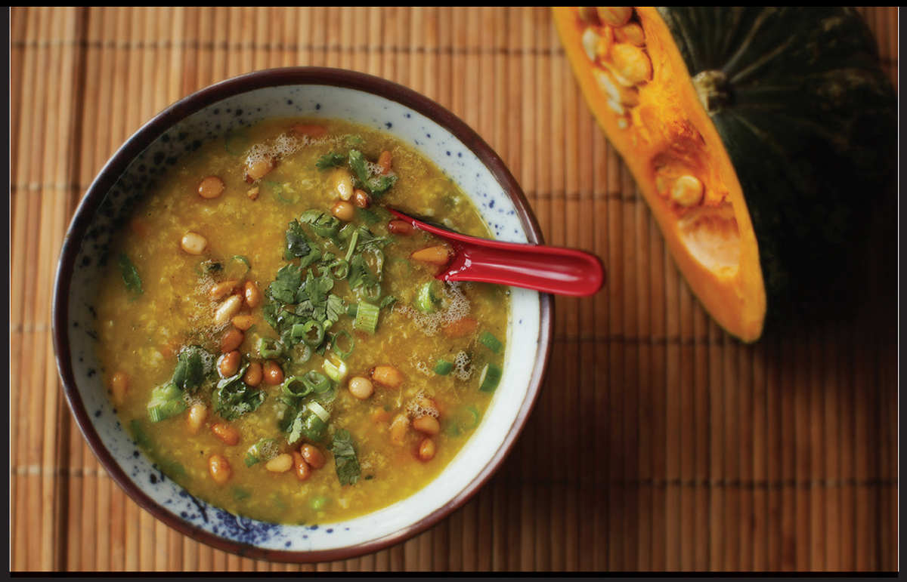

CONGEE WITH PUMPKIN AND PINE NUTS
Yield Serves 4 |
Active Time 30 minutes Total Time 1½ hours |
INGREDIENTS
1 tablespoon (15 ml) vegetable oil
1 small leek, white and pale green parts only, finely minced (about 3 ounces/90 g)
2 medium garlic cloves, minced (about 2 teaspoons/5 g)
½ cup (about 3.5 ounces/100 g) short-grain or jasmine rice
Water or low-sodium chicken or vegetable stock (6 cups for short-grain, 5 cups for jasmine)
8 ounces (225 g) peeled and seeded kabocha squash (about ½ small squash), cut into rough ½-inch dice
9 cups water, vegetable, or chicken broth
1 tablespoon (12 g) light or dark brown sugar or maple syrup
Kosher salt and freshly ground black pepper
3 tablespoons (45 g) unsalted butter
¼ cup (35 g) pine nuts
A few tablespoons chopped fresh cilantro
3 scallions, thinly sliced

Cooking rice and kabocha squash together results in a strikingly bright orange congee. Kabocha is one of the few squash varieties that doesn’t require peeling before cooking (see my recipe for Simmered Kabocha Squash on here), but in this particular dish the squash needs to almost completely break down, so peeling is necessary. A little brown sugar or maple syrup accentuates the natural sweetness of the squash. I finish it off with a scattering of pine nuts that are slowly toasted in butter.
DIRECTIONS
1 Heat the oil in a Dutch oven or wok over low heat until shimmering. Add the leek and cook, stirring frequently, until softened but not browned, about 4 minutes. Add the garlic and cook, stirring, until fragrant, about 30 seconds. Add the rice, squash, water or stock, and brown sugar or maple syrup. Bring to a boil, reduce to a bare simmer, and cook until the rice and squash are completely tender and the broth is silky and thick, about 1 hour.
2 Using a potato masher or stiff whisk, mash the pumpkin until it is mostly incorporated into the rice and only a few small chunks remain. Season with salt and pepper to taste. Keep the congee warm.
3 Heat the butter in a wok or small skillet over low heat until melted. Add the pine nuts and cook, stirring frequently, until the nuts are evenly browned all over and have a toasted, nutty aroma, about 5 minutes. Alternatively, toast nuts in the microwave (see here).
4 Stir half of the nuts and the cilantro, and scallions into the congee, reserving some scallions and cilantro for garnish. Sprinkle the remaining nuts with the browned butter and the reserved cilantro and scallions on top of the congee. Serve immediately.